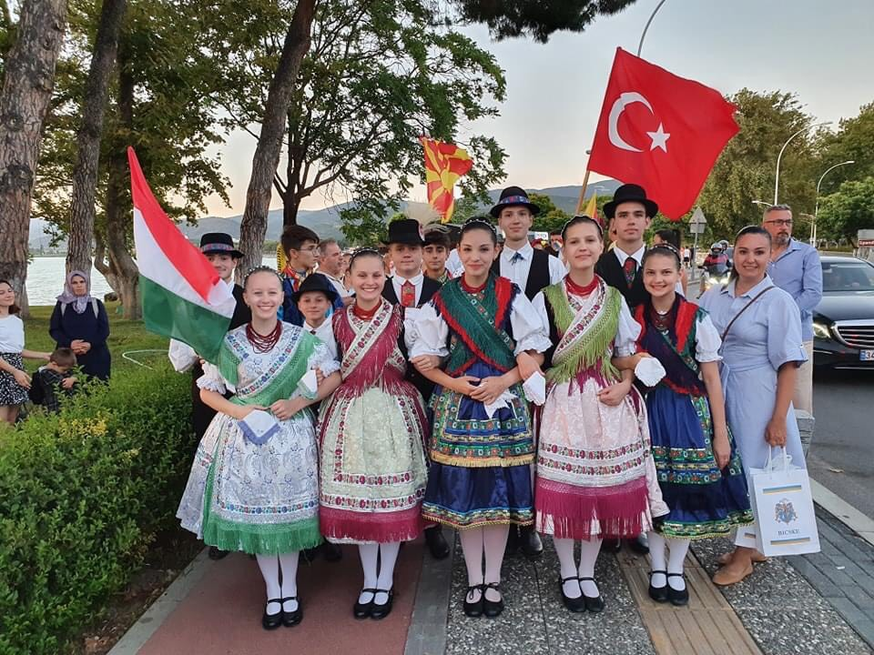
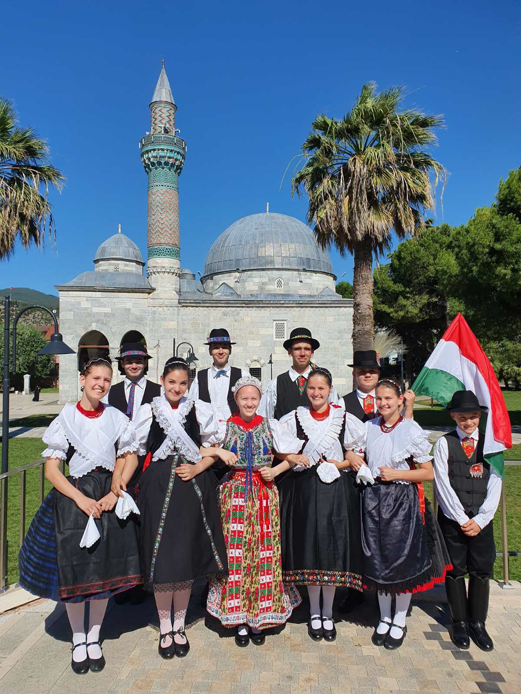

|
|
|
|
|
Oktatás |
Galéria |
Rólunk |
Kapcsolat |
| Iznik Folklór
Fesztivál
2022. Július 19-23. : Törökországban jártunk IZNIK városában, egy Nemzetközi Zenei és Folklór Fesztiválon.5 pár táncossal képviseltük hazánkat.
Rengeteg élményben volt részünk. Minden nap
volt zenés utcai felvonulás, illetve több fellépés is.

A fesztiválon részt vevő macedón csoport művészeti vezetője nagyra értékelte az előadásunkat, ezért jövőre a náluk megrendezendő ifjúsági folklór fesztiválra meghívást kaptunk. Táncosaink nemzetközi kapcsolatokra is szert tettek. Szabadidejükben sok időt töltöttek macedón és török táncostársaikkal. A fesztivál minden résztvevője rendkívül nyitott volt egymás kultúrájának mély megismerésére.

A szakmai feladatok mellett a csoport kulturális élményekben is gazdagodott. Helyi ételek színes palettáját kóstolhattuk végig. Kezdve a sós és savanykás ayrantól egészen a mézédes baklaváig. Egy egész napot töltöttünk Isztanbulban, amely építészeti csodáival, bazári forgatagával hatalmas élményt nyújtott a gyerekeknek.
Köszönjük támogatóinknak: Bálint Istvánné Andrea Polgármester Asszonynak, Pallagi Tibor Polgármester Úrnak, Tácsik Attila Polgármester Úrnak, Nagyegyházi Baráti Kör Közhasznú Egyesületnek, Csizmadia Zsuzsanna Polgármester Asszonynak, Herceghalom Gyermekeiért Közhasznú Alapítványnak. |
|
© Mayer Néptáncműhely, 2022 - 2023 |